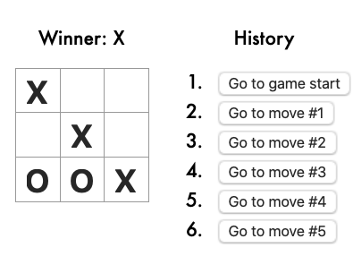

Summary.
A tic-tac-toe game implemented with React.
Tic-tac-toe (American English), noughts and crosses (Commonwealth English and British English), or Xs and Os/“X’y O’sies” (Ireland), is a paper-and-pencil game for two players, X and O, who take turns marking the spaces in a 3×3 grid. The player who succeeds in placing three of their marks in a diagonal, horizontal, or vertical row is the winner. It is a solved game with a forced draw assuming best play from both players.Important remark: using React without nodejs
is a great way to try React, but it's not suitable for production.
It slowly compiles JSX
with Babel in the browser, and uses a large development build of React.
- Read this section for a production-ready setup with JSX.
- In a larger project, you can use an integrated toolchain that includes JSX instead.
- You can also use React without JSX, in which case you can remove Babel.
Usage:
- To install jsdoc and yarn:
- sudo npm install --global yarn
- sudo npm install -g jsdoc
- To run react in the browser, then run Babel on the fly, and save the "compiled" output when the source has changed:
- npm init -y
- npm install babel-cli@6 babel-preset-react-app@3
- npx babel --watch src --out-dir . --presets react-app/prod &
- To run the version with modules and Node.js version 16 or 18:
- Since:
- 17/09/2021
- Source:
- See:
-
- source
- source compiled (Babel)
- package.json
- link
- https://reactjs.org/tutorial/tutorial.html#overview
- https://flarnie.github.io/react/tutorial/tutorial.html
- https://reactjs.org/docs/react-dom.html
- https://reactjs.org/docs/react-api.html#createelement
- https://reactjs.org/docs/add-react-to-a-website.html
- https://legacy.reactjs.org/docs/faq-build.html
- 